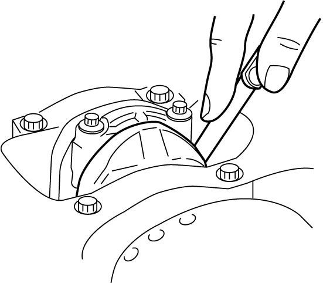
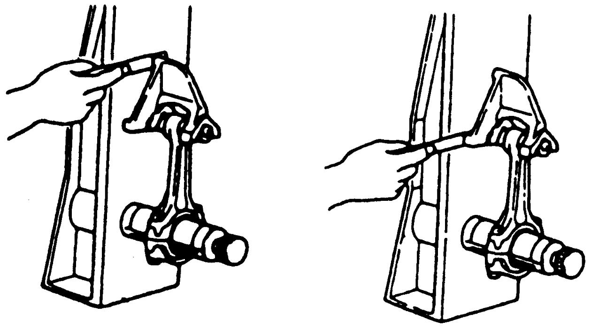
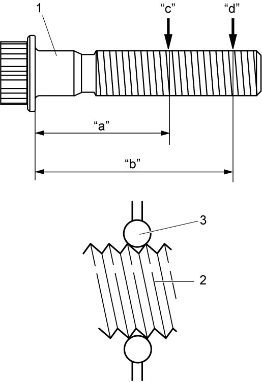

1D
| Piston Pin and Connecting Rod Inspection |
Piston Pin
Visual inspection
Check piston pin, connecting rod small-end bore and piston pin hole in piston for wear or damage, paying particular attention to condition of small-end bore bushing. If piston pin, connecting rod small-end bore or piston pin hole in piston is badly worn or damaged, replace piston pin, connecting rod and/or piston.
Piston pin clearance
Check piston pin clearance in small-end and piston. Replace connecting rod and/or piston, if its small-end is badly worn or damaged or if measured clearance exceeds limit.
Piston pin clearance in connecting rod small-end
Standard: 0.007 – 0.020 mm (0.0002 – 0.0007 in.)
Limit: 0.02 mm (0.0007 in.)
Piston pin clearance in piston
Standard: 0.002 – 0.010 mm (0.0001 – 0.0003 in.)
Limit: 0.01 mm (0.0003 in.)
Small-end bore
18.007 – 18.016 mm (0.7089 – 0.7092 in.)
Piston pin outside diameter
17.996 – 18.000 mm (0.7085 – 0.7086 in.)
Diameter of piston pin hole in piston
18.002 – 18.006 mm (0.7087 – 0.7088 in.)

 "Expand image")
Connecting Rod
Big-end side clearance
Check big-end of connecting rod for side clearance, with rod fitted and connected to its crankshaft pin in a normal manner. If measured clearance exceeds its limit, replace connecting rod.
Big-end side clearance
Standard: 0.10 – 0.30 mm (0.0039 – 0.0118 in.)
Limit: 0.55 mm (0.0217 in.)

 "Expand image")
Connecting rod alignment
Mount connecting rod on aligner to check it for bow and twist. If measured value exceeds the limit, replace connecting rod.
Connecting rod alignment
Limit on bow: 0.05 mm (0.0020 in.)
Limit on twist: 0.10 mm (0.0039 in.)

 "Expand image")
Connecting rod bolt deformation
Measure each thread diameter of connecting rod bolt (1) at “c” on 25 mm (0.98 in.) from bolt mounting surface and “d” on 40 mm (1.57 in.) from bolt mounting surface using a micrometer (3).
Calculate difference in diameters (“c” – “d”). If it exceeds limit, replace connecting rod bolt (1).
Connecting rod bolt measurement points
“a”: 12.0 mm (0.47 in.)
“b”: 32.0 mm (1.25 in.)
Connecting rod bolt diameter difference
Limit (“c” – “d”): 0.05 mm (0.0019 in.)

 "Expand image")
| 2. | Thread |